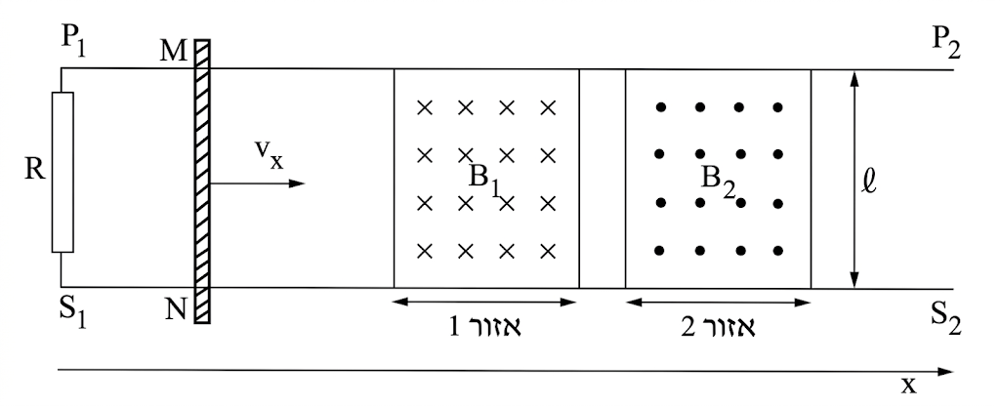

בתרשימים שלפניכם מוצגת מערכת ניסוי, במבט מלמעלה. המערכת מורכבת משתי מסילות חלקות, \(S_1 S_2\) ו- \(P_1 P_2\), המונחות במקביל על שולחן אופקי, במרחק \(l\) זו מזו (ראו תרשים).
על המסילות מונח מוט \(MN\) שמסתו \(m\). המסילות והמוט מוליכים, והתנגדותם זניחה.
(התנגדות האוויר והחיכוך ניתנים אף הם להזנחה).
נגד \(R\) מחבר בין הקצוות \(P_1\) ו- \(S_1\) של המסילות.
בין המסילות באזור 1 (\(0 \le x \le 0.4 \text{m}\)) קיים שדה מגנטי \(B_1\),
ובין המסילות באזור 2 (\(0.5 \text{m} \le x \le 0.9 \text{m}\)) קיים שדה מגנטי \(B_2\).
שני השדות קבועים, מאונכים למישור השולחן ושווים בגודלם: \(|B_1| = |B_2| = 0.04 \text{T}\).
הכיוונים של השדות מסומנים בתרשים.
נתון: \(l = 50 \text{cm}\), \(R = 4 \Omega\)

בשלב ראשון המוט נכנס לאזור 1 במהירות קבועה \(V_X = 2 \frac{m}{s}\)
א.האם בשלב זה יזרום בנגד זרם? אם לא – נמקו מדוע. אם כן – קבעו האם כיוונו מ-\(P_1\) ל-\(S_1\) או מ-\(S_1\) ל-\(P_1\) ונמקו את קביעתכם. (6 נקודות)
ב.האם דרוש כוח חיצוני כדי שהמוט ינוע במהירות קבועה? אם לא — נמקו מדוע, אם כן — חשבו את גודלו וקבעו את כיוונו. (8 נקודות)
בשלב השני המוט עובר באזור 2 ומפעילים על המוט כוח \(F\) בכיוון החיובי של ציר \(X\) כך שהוא נע בתאוצה קבועה \(a = 5 \frac{m}{s^2}\).
ג.מה יהיה במקרה זה כיוון הזרם בנגד \(R\)? מ-\(S_1\) ל-\(P_1\) או מ-\(P_1\) ל-\(S_1\)? נמקו את קביעתכם! (6 נקודות)
ד.נגדיר את רגע הכניסה של המוט לאזור 2 כ-\(t = 0\). פתחו ביטוי שיתאר את הזרם בנגד כפונקציה של הזמן. (7 נקודות)
ה.האם העבודה של הכוח \(F\) גדולה מכמות החום המתפתחת בנגד באותו פרק זמן, קטנה ממנה או שווה לה? הסבירו את קביעתכם ללא חישוב! (6.33 נקודות)